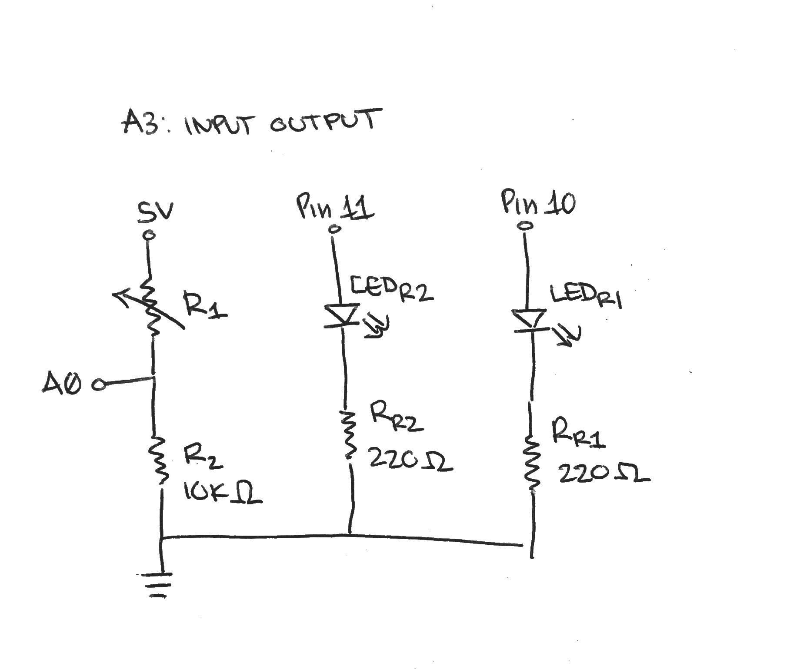

Assignment 3: Input Output!
"Create a schematic, circuit, and code that uses a sensor (e.g. either the photoresistor or the thermistor) in a voltage divider to change the state of an LED."
Input Output Demo:

This is a gif showing how the circuit works when assembled.

This is a gif showing the serial monitor readings display changes in LED brightness
Circuit diagram:
The system is essentially three circuits, one which is connected to the photoresistor, and one for each of the red LEDs. The LEDs will alternate lighting on/off based off of the brightness levels of the environment.
Schematic:

This is a schematic of my circuit. In this circuit, both of the red LEDs are built in parallel through Pin 11 and 10. Both LEDs are connected to their own resistors and then to a common ground. The voltage divider has a photoresistor and a 10k Ohm resistor that is in series with the A0 pin between them.
Resistance Calculations:
I used Ohm's Law in order to calculate the resistors for both of the LED circuits

The minimum required total resistance is calculated for the voltage divider based on the max current allowed to ground the pins (200mA). Considering that the range of resistance can vary for the photoresistor, an additional resistor is needed to prevent short circuiting. While the minimimum resistance needed to prevent the board from frying is 25Ω, I used a 10kΩ resistor just to be safe.
The values I might read at the voltage divide can be calculated using the voltage divider equation.
Code Snippet:
To satisfy all the conditions of the assignment, I used analogRead() to print the brightness values from the photoresistor and set it into the variable "val". The analogWrite() function will determine which LED will turn on based off the reading. The map function helps re-map a number from one range to another and the if statements determine the conditions to be met for each LED to turn on.